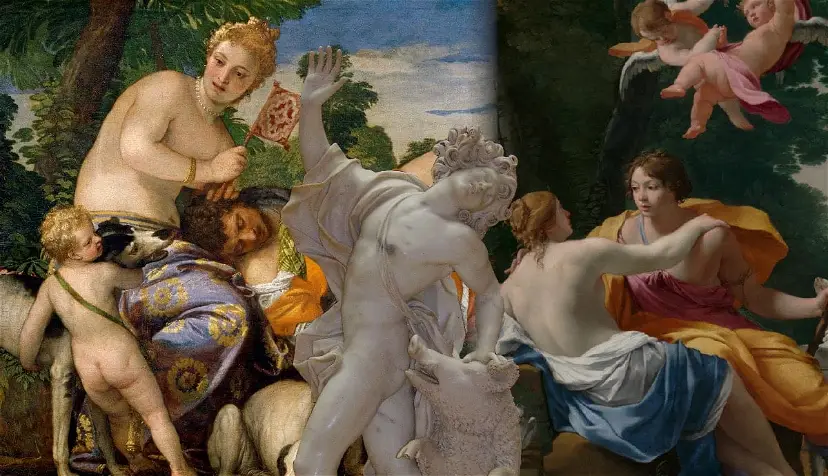
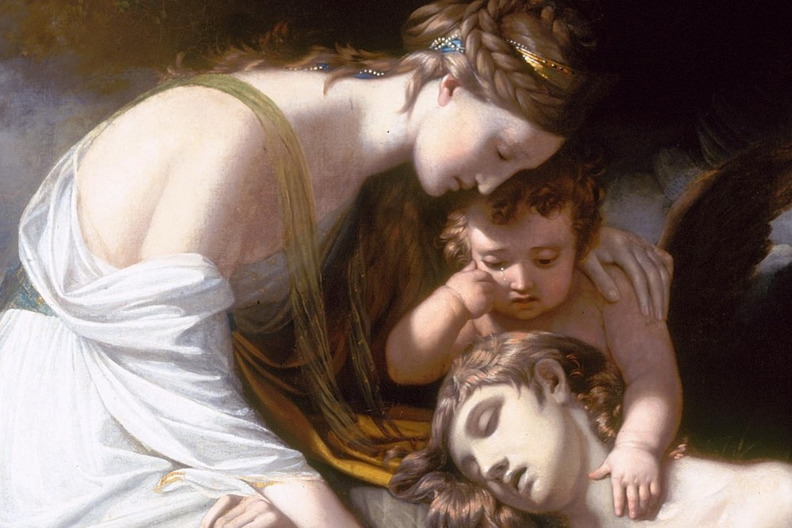
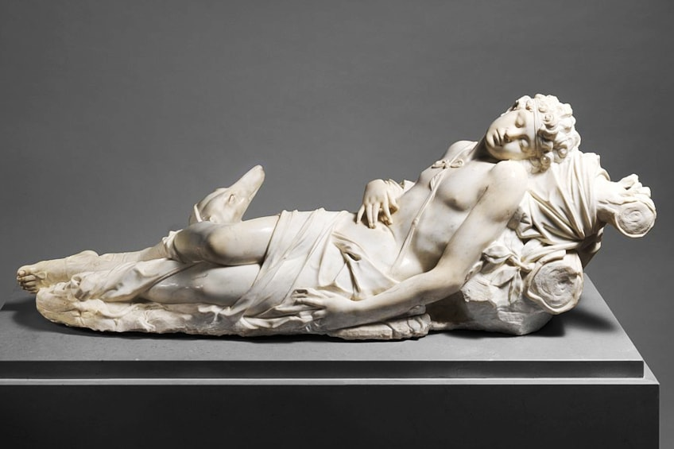
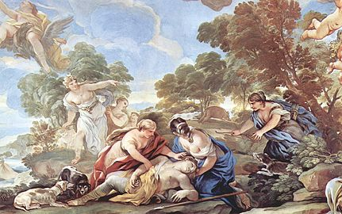

Αστεροειδής αδώνης
Adonis

Adonis, son of the Eastern king Cinyras and his daughter Myrrha, was an exceptionally handsome young man. He was so handsome, in fact, that the goddesses Aphrodite and Persephone competed for his love. Though they were ultimately forced to share the young man, Adonis favored Aphrodite and was best known as her lover.
Adonis was also an accomplished hunter. One day, while out hunting, he was slain by a boar (sometimes said to have been the god Ares in disguise, another one of Aphrodite’s lovers and thus Adonis’ rival). Aphrodite greatly mourned Adonis’ death; she commemorated him by creating the anemone from his blood and instituting lavish festivals in his honor.
The Birth and Beauty of Adonis
Adonis's origins are complex and varied depending on the source, but a common version involves his birth from an incestuous union between Myrrha (or Smyrna) and her father, King Cinyras of Cyprus. Myrrha, cursed by Aphrodite (or in some versions, driven by the wrath of the gods), fell in love with her father and tricked him into a relationship. When Cinyras discovered the truth, he pursued Myrrha with a sword, but the gods, taking pity on her, transformed her into a myrrh tree. From this tree, Adonis was born, emerging from its bark.
From the moment of his birth, Adonis was noted for his extraordinary beauty. His attractiveness was so remarkable that it caught the attention of the goddess Aphrodite.
The Love of Aphrodite and Adonis
Aphrodite, the goddess of love and beauty, fell deeply in love with Adonis. She took him under her protection and kept him hidden in a chest, which she entrusted to Persephone, the queen of the Underworld. When Persephone discovered the stunning youth inside the chest, she too was captivated by his beauty and refused to return him to Aphrodite.
The dispute between the two goddesses over Adonis was brought before Zeus, the king of the gods. Zeus decreed that Adonis would spend one-third of the year with Persephone, one-third with Aphrodite, and the remaining third wherever he chose. Adonis, naturally, chose to spend his own portion of the year with Aphrodite.
The Death of Adonis
Adonis was a passionate hunter, and despite Aphrodite's warnings, he frequently ventured into the woods to hunt wild animals. His tragic fate unfolded during one of these hunts. Adonis encountered a wild boar, which, according to various interpretations, could have been sent by Artemis out of jealousy, by Ares due to his jealousy over Adonis’s relationship with Aphrodite, or simply as a symbol of his inevitable mortality. The boar attacked Adonis, fatally wounding him.
Aphrodite, sensing her lover’s peril, rushed to his side, but she arrived too late. As she mourned over his body, his blood mingled with her tears and gave rise to the anemone flower, symbolizing the fleeting nature of life and beauty.
The Symbolic Power of Adonis
Adonis's power in mythology is more symbolic than supernatural. His story conveys several key themes:
Beauty and Desire:
Adonis represents the ultimate in male beauty and the intense desire it can inspire, affecting even the gods. His attractiveness leads to both his fortune and misfortune.
Love and Jealousy:
The love triangle between Aphrodite, Persephone, and Adonis highlights the complexities and conflicts inherent in love, even among divine beings.
Life, Death, and Rebirth:
Adonis's life cycle—his birth from a tree, his life with Aphrodite, and his death and rebirth—mirrors the natural cycles of growth and decay. His annual return from the Underworld symbolizes the renewal of life in spring and the power of rebirth.
Tragic Mortality:
Despite his beauty and the love of a goddess, Adonis’s mortal nature ensures his vulnerability to death. His story is a poignant reminder of the inevitability of death, regardless of one’s beauty or divine favor.
Conclusion
Adonis’s myth is a rich tapestry of love, beauty, and mortality, capturing the imagination of ancient and modern audiences alike. Through his story, the Greeks explored profound themes about the nature of existence and the eternal cycle of life and death. Adonis’s symbolic power lies in his ability to embody both the peak of physical beauty and the inevitable decline that comes with mortality.